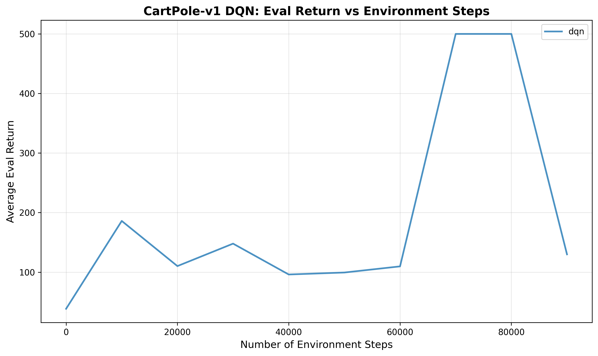
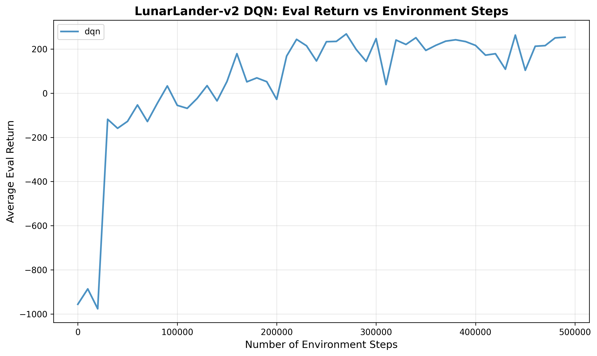
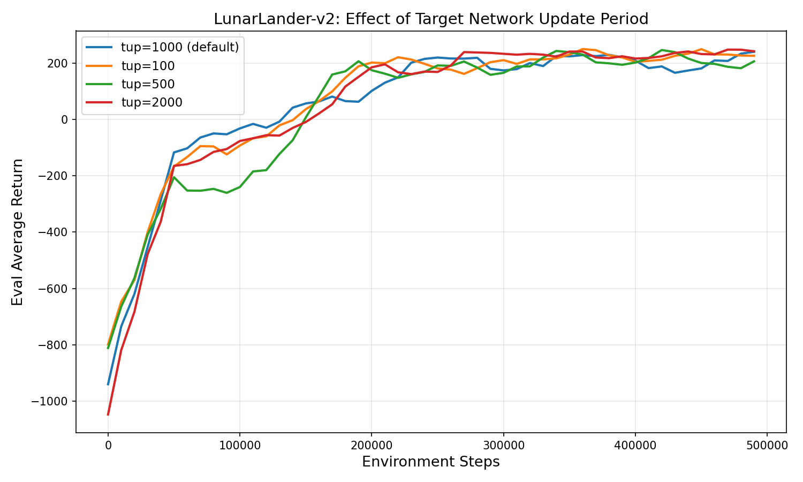
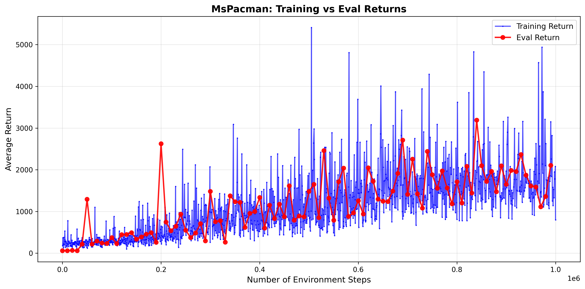
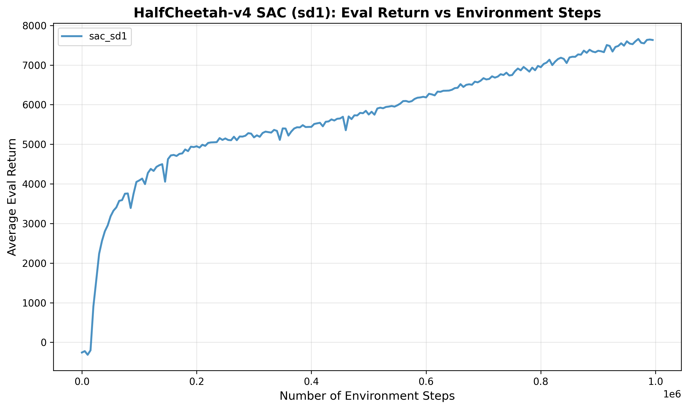
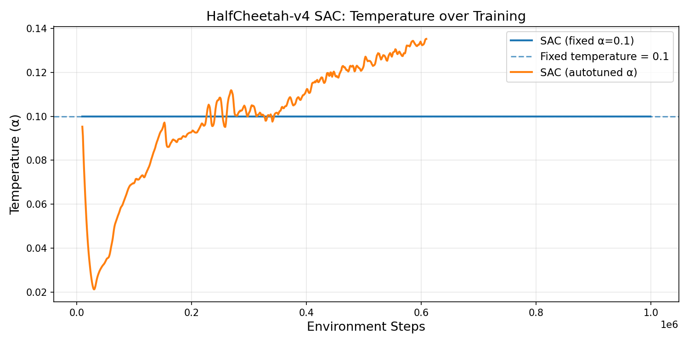
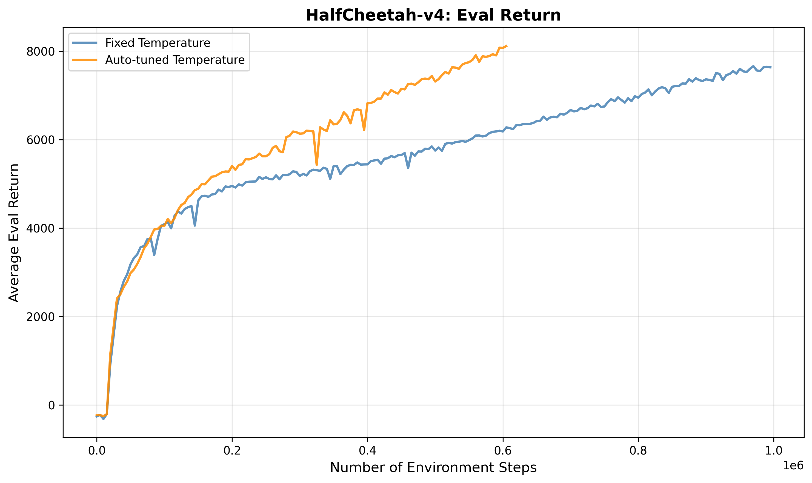
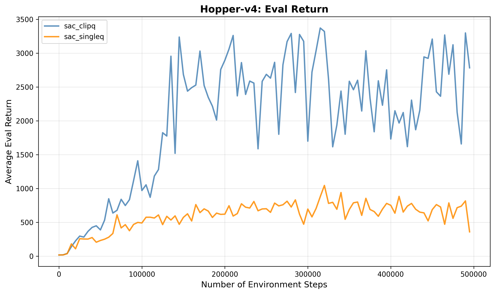
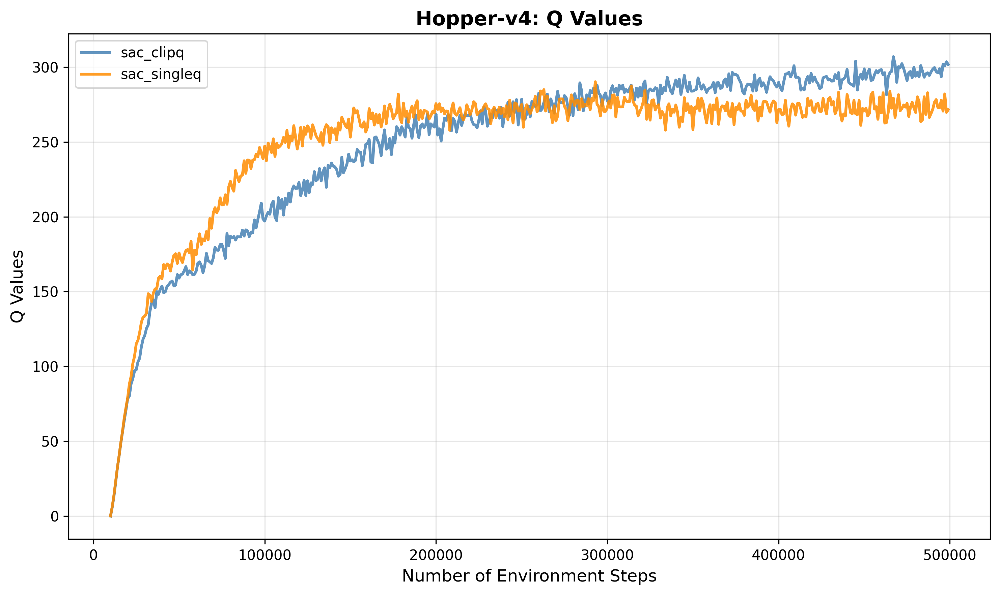

DQN and Soft Actor-Critic (SAC)
Project Overview
This assignment explores Deep Q Networks and Soft Actor-Critic (SAC), an off-policy maximum entropy reinforcement learning algorithm. SAC optimizes a trade-off between expected return and entropy, encouraging the agent to explore while still achieving high rewards.
For the full details, refer to the spec: spec
DQN
CartPole Experiments
We begin by validating the DQN implementation on CartPole-v1, a simple discrete action space environment where the agent must balance a pole on a cart. The idea behind a DQN is that we'll use the expected discounted return starting from state s and taking action a and acting optimally as well as using a replay buffer and updating a target network slowly.
CartPole Eval Return
Evaluation return over training steps for CartPole-v1:

LunarLander Experiments
For this section we'll also be adding Double-Q learning, which reduces overestimation bias. We'll have the online network to select the action, and the online to evaluate the action.
LunarLander Eval Return
Evaluation return over training steps for LunarLander-v2:

Target Network Update Frequency
We also experiment with how often the target network is updated. The target network is a slowly-updated copy of the Q-network used to stabilize training — updating it too frequently can cause instability, while updating too rarely can slow learning.
We compare four update frequencies:
- Every 100 iterations: More frequent updates, closer to the online Q-network
- Every 500 iterations: Moderate update frequency
- Every 1000 iterations: Default setting
- Every 2000 iterations: Less frequent updates, more stable but potentially slower to propagate new information

Chose target_update_comparison to see how frequently updating the target network impacted learning
Ms. Pac-Man Experiments
We apply double Q-learning to MsPacman-v0, a high-dimensional Atari environment requiring pixel-based observations. This tests the scalability of SAC beyond simple continuous control tasks.
Training vs. Eval Returns
Comparison of training and evaluation returns over the course of training. A gap between training and eval returns can indicate overfitting to the replay buffer or a difference in exploration behavior:

SAC
In SAC, we'll be training a model for continuous action states. In order to do this, we'll be using entropy and reparameterization in order to create our Q network, policy, and temperature for exploration.
HalfCheetah Experiments
We evaluate SAC on the HalfCheetah-v4 continuous control environment using a fixed temperature α.
HalfCheetah Eval Return
Evaluation return over training steps:

Fixed vs. Auto-Tuned Alpha
The temperature parameter α controls the entropy regularization strength. Here we compare using a fixed α against automatically tuning α to match a target entropy.
- Fixed α: A constant temperature set at initialization; requires manual tuning per environment
- Auto-tuned α: Learned automatically to maintain a target entropy level, reducing the need for per-environment hyperparameter search
Alpha Comparison
Comparison of fixed versus auto-tuned α on HalfCheetah-v4:

Overall SAC Comparison
Summary comparison across HalfCheetah configurations:

Discussion
Does auto-tuning improve or achieve comparable performance to the fixed temperature?
auto-tuning significantly improves the performance of the half-cheetah experiments. Instead of having to run for 1,000,000 environmental steps to achieve a value of 8000 on the evaluation return, we only need run for around 600,000 steps.
How does the temperature evolve during training? Does it increase, decrease, or stabilize?
The temperature at first decreases drastically, and then continuously increases from then on out.
Why might the temperature change in this particular way for HalfCheetah?
The temperature likely changes this particular way for HalfCheetah because initially, the model already has incredibly high entropy so the target entropy is already met. Then the autotuner raises alpha to avoid collapsing to a set of actions too early. Once the policy begins to converge, we will continue to increase the temperature to continously explore.
Hopper Experiments
We evaluate SAC on the Hopper-v4 environment, a locomotion task requiring the agent to balance and hop forward without falling over.
Hopper Eval Return
Evaluation return over training steps for Hopper-v4:

We can see here that the clip-double q learning, achieves significantly higher returns and much quicker than the single-q learning. This is because our double-Q network takes the minimum, and thus becomes a conservative estimate for the Q function.
Hopper Q-Values
Q-value estimates over the course of training. Monitoring Q-values helps diagnose overestimation and instability issues:

We can also see in this plot that the clipped-double Q values start much lower than the single Q-learning which is expected since taking the minimum is conservative by design. However, because this conservatism prevents the policy from exploting inflated Q-values, the policy improves much more reliably and as a result the Q-values grow as the agent learns to achieve higher returns